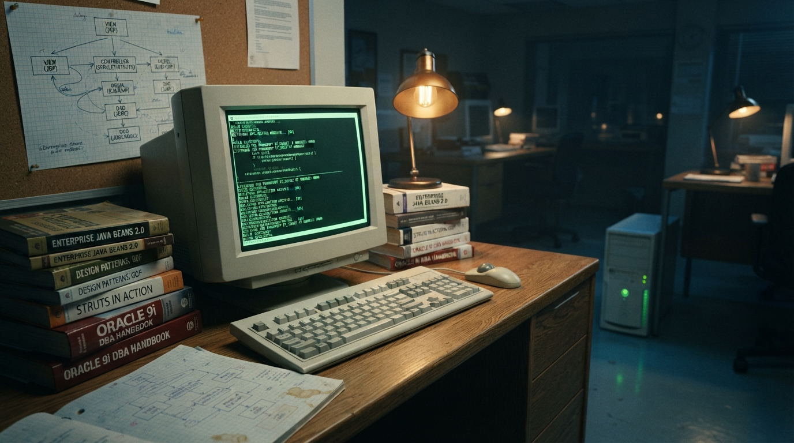

Série: A Evolução Cíclica da TI — Episódio 01
Ato I (1990–2012): A Era dos Fundamentos, a Bolha e o "Angu de Caroço" do Servidor

Quem já tem alguma estrada na tecnologia costuma olhar para o discurso contemporâneo de "crise inédita na TI" com um sorriso meio amarelo. O sentimento de terra arrasada, a compressão de vagas e o pânico de obsolescência não nasceram com a inteligência artificial generativa. A história da computação corporativa é marcada por ciclos implacáveis de expansão agressiva seguidos de correções profundas — e quem sobreviveu às transições anteriores sabe que a única âncora confiável sempre foi a solidez dos fundamentos.
A década de 90 e a ressaca da Bolha Ponto-Com
Na década de 90, a consolidação da informática nas empresas e o surgimento comercial da internet criaram uma febre de contratação sem paralelo. Bastava adicionar um sufixo .com ao nome de qualquer empreendimento para captar milhões no mercado de capitais, mesmo sem ter produto consolidado, faturamento recorrente ou lucratividade mínima. Contratava-se qualquer um que soubesse o básico de HTML, tabelas e configuração de redes locais.
Quando a bolha estourou entre 2000 e 2001, a euforia virou poeira. Milhares de empresas sumiram do mapa da noite para o dia, profissionais experientes viram-se descolocados e a narrativa dominante na imprensa especializada era de que "a TI havia morrido". No entanto, o software não morreu: ele apenas expurgou a especulação vazia e passou a exigir sustentação financeira e engenharia de verdade.
A seleção natural dos antigos "Webmasters"
Foi nesse mesmo intervalo que a primeira grande espécie de profissionais da web foi extinta: a figura do Webmaster. Nos anos 90, o webmaster era aquele que editava algumas páginas estáticas, recortava imagens no Photoshop e dizia que "fazia sites". Quando a internet deixou de ser um mero folheto promocional eletrônico e passou a exigir sistemas transacionais complexos — com banco de dados relacional, controle de sessão, segurança e regras fiscais —, quem se recusou a estudar programação de verdade e arquitetura de dados simplesmente evaporou.
Quem permaneceu no jogo foi quem levantou o capô do carro, aprendeu lógica estruturada, entendeu como o protocolo HTTP funcionava em nível de bytes e dominou o tráfego do dado desde o disco até a renderização na tela.
O ecossistema Java (2007–2012): o verdadeiro "Angu de Caroço"
Quando comecei a estudar e trabalhar com Java por volta de 2007, a construção de sistemas corporativos exigia navegar por uma densidade técnica que assustaria muitos dos desenvolvedores formados nos últimos anos. Construir uma aplicação web corporativa robusta era um verdadeiro angu de caroço.
No modelo dominante da época — centrado no Java EE, servlets, JSP e especialmente no JavaServer Faces (JSF 1.x e 2.x) —, o desenvolvedor precisava entender com precisão cirúrgica o ciclo de vida de componentes no servidor:
- Restore View: reconstituir a árvore de componentes mantida em sessão no servidor;
- Apply Request Values: decodificar parâmetros HTTP brutos para os componentes;
- Process Validations: rodar validadores customizados e conversores de tipo;
- Update Model Values: sincronizar dados validados nos managed beans;
- Invoke Application: executar a regra de negócio e persistência;
- Render Response: gerar a marcação HTML de volta para o cliente.
Adicione a essa equação o uso de bibliotecas como RichFaces, PrimeFaces, AJAX embutido rudimentar, CSS artesanal e manipulação cirúrgica de DOM com JavaScript puro. Era uma arquitetura pesada, complexa e altamente acoplada ao servidor, que exigia anos de estudo dedicado para não deixar a sessão estourar a memória RAM da máquina ou corromper o estado das requisições.
O Full-Stack de Verdade: Da Tabela ao HTML
Apesar de toda a aspereza daquela pilha tecnológica, havia uma virtude fundamental que o mercado atual esqueceu: a coesão do ciclo de engenharia. O desenvolvedor Java daquela geração era um full-stack de fato. Ele criava a modelagem relacional no banco (tabelas, índices, chaves estrangeiras), escrevia os prepared statements ou mapeamentos JPA/Hibernate, geria as transações ACID no backend e amarrava a tela até a saída HTML.
Não existia a desculpa de "eu não olho banco de dados" ou "não sei como o dado chega no servidor". A responsabilidade pela entrega de ponta a ponta recaía sobre o mesmo engenheiro. O software podia ser denso, mas resolvia o problema do cliente sem a necessidade de manter três departamentos separados brigando por contratos de API ou árvores infinitas de pacotes.
Essa base sólida construída no servidor serviu como alicerce para tudo o que veio a seguir. No entanto, quando a indústria finalmente parecia ter domado o "angu de caroço" do processamento centralizado, o mercado decidiu puxar o pêndulo com violência para o lado oposto — dando início à era dos modismos de front-end e das camadas desnecessárias.
Dicionário de Termos Técnicos e Jargões (para leigos)
Conceitos fundamentais da era dos servidores e da computação corporativa clássica explicados de forma simples:
- Bolha Ponto-Com (2000–2001)
- Crise em que empresas com sites na internet receberam investimentos astronômicos sem gerar receita real, culminando em falências em massa e choque de maturidade no setor de TI.
- Webmaster
- Função dos anos 90 focada em montar páginas visuais e estáticas; desapareceu quando a web passou a exigir programação de bancos de dados e regras de negócio complexas.
- JSF (JavaServer Faces)
- Tecnologia do ecossistema Java que gerenciava a criação de telas inteiras no servidor da empresa, controlando o estado de cada botão, tabela e formulário diretamente na memória.
- JSP e Servlets
- Padrões históricos em Java para escutar conexões da web, buscar dados no banco relacional e gerar páginas HTML dinâmicas para os navegadores.
- Transação ACID
- Garantia de segurança máxima de banco de dados onde uma operação (ex: transferência financeira) só é confirmada se todas as etapas forem executadas perfeitamente, sem perda de dados.
- Prepared Statement
- Método de programação segura para consultar e gravar dados sem permitir que invasores injetem códigos maliciosos no banco (ataque de SQL Injection).
Nota: Primeiro ensaio da trilogia A Evolução Cíclica da TI (Fiction-Based Technical Insights & Engineering Realism).